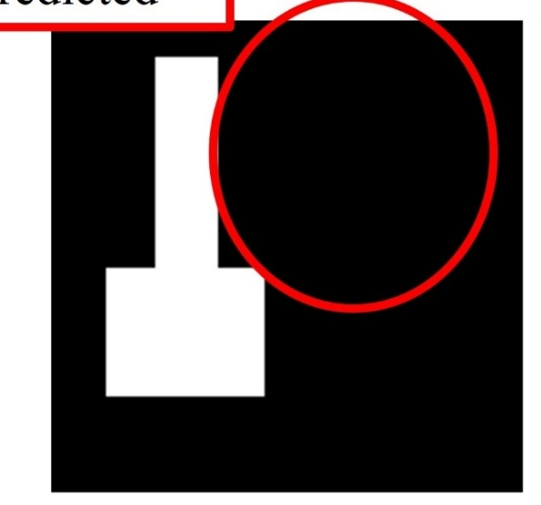
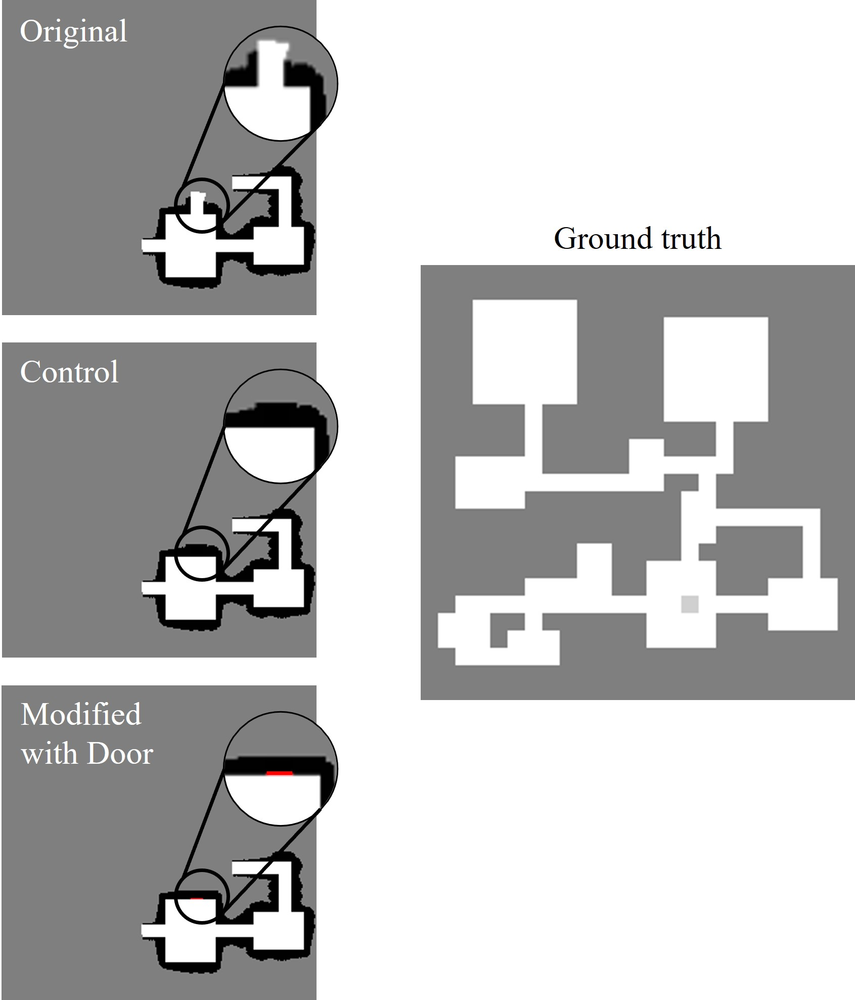
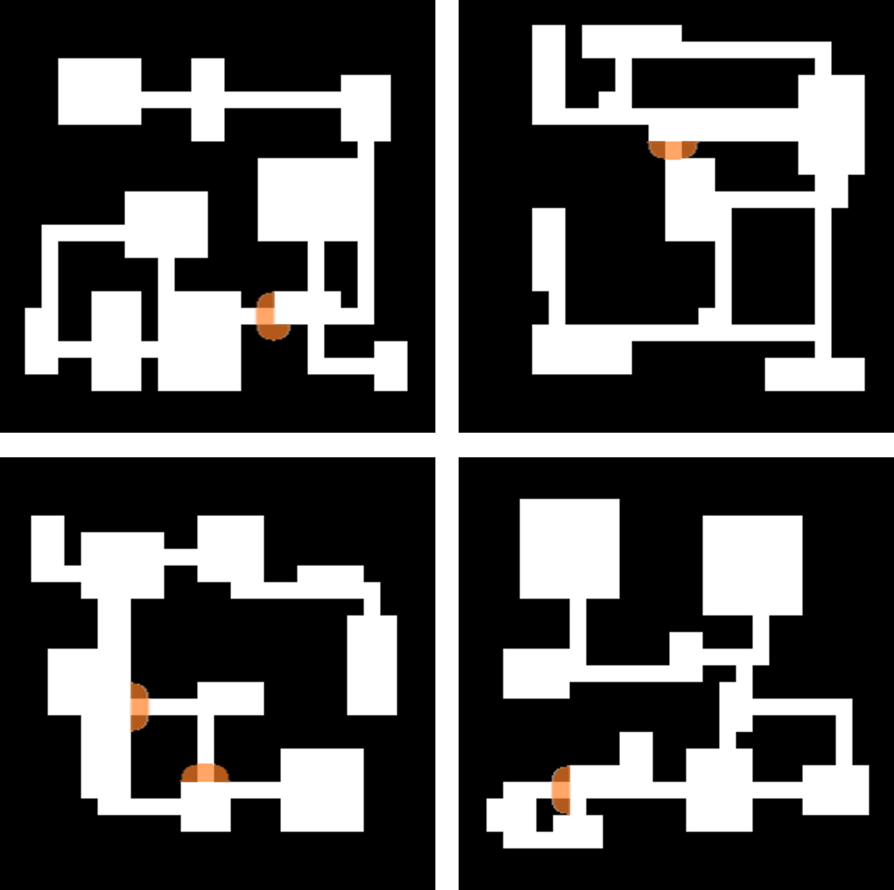
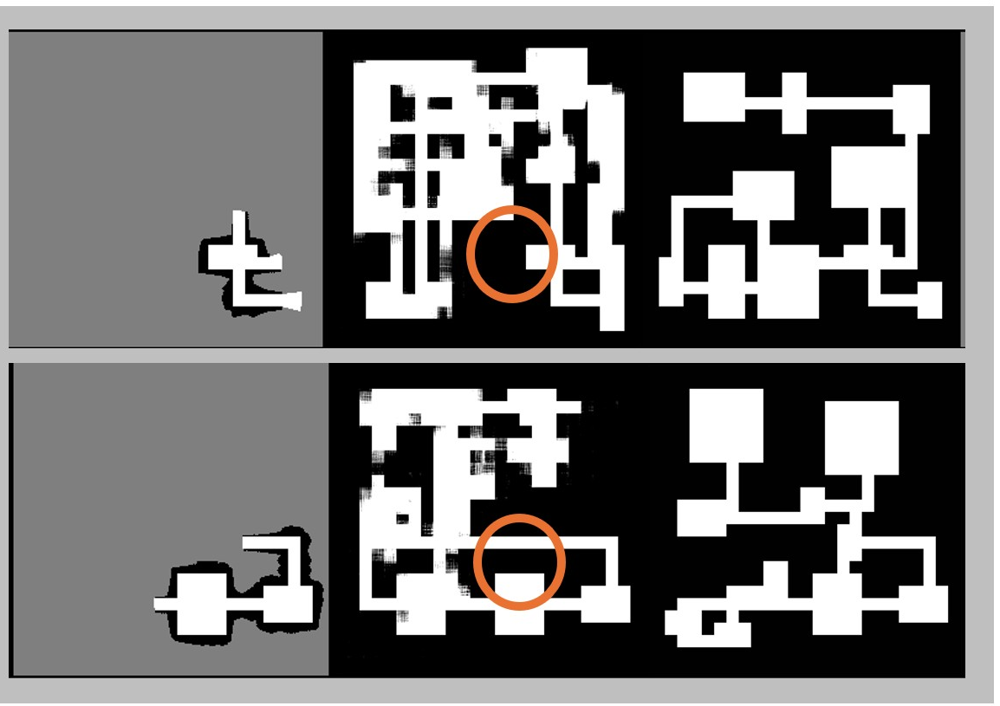

The problem
The same geometric observation can correspond to very different underlying structures.
Occupancy maps are powerful because they reduce the world to a planning-friendly representation: free, occupied, and unknown space. But this abstraction can discard semantic meaning.
A closed door is a simple example. In an occupancy map it can look like a wall: both are occupied barriers. Yet they do not mean the same thing. A wall usually terminates connectivity; a door can indicate a room, corridor, or traversable region beyond the current observation.
Change the scene. The occupancy geometry stays the same.
Switch between the two corridor scenes from the presentation. The semantic interpretation changes, while the geometric occupancy view remains unchanged.
Why predictive mapping
This ambiguity becomes especially important when the map predicts what has not yet been seen.
Predictive mapping extends a partial occupancy map by estimating plausible structure in unseen regions. Those predictions can support navigation and exploration by exposing possible rooms, corridors, and connections before the robot directly observes them.
If a predictive model interprets a door exactly like a wall, its predicted layout may stop at the boundary. If it knows that the occupied segment is a door, the same local geometry carries additional information about possible connectivity beyond it.
This work studies that narrow question: whether adding explicit door semantics changes predictive occupancy completion where geometry alone is ambiguous.
Approach
Keep the geometry. Add one semantic signal.
We build on CogniPlan [1], a predictive mapping framework for inferring unseen geometric layouts from partial occupancy observations. We compare two inputs that differ only in whether the model receives an explicit door channel.

Same scene, less meaning in the input.
The occupancy input contains no explicit information that the occupied segment is a door rather than a wall.
Question: does adding the door cue change what the predictive map infers beyond that boundary?
The corridor and prediction panels above are conceptual presentation illustrations. Experimental evidence is shown in the results section below.
Experimental details
Dataset construction
A controlled ambiguity, with the ground truth unchanged.
Artificial door segments are inserted only into the partial observations. The ground-truth layout remains the same for both conditions. This lets us ask whether door semantics help the model recover connected unseen structure without changing the target map.

Evaluation
Measure the whole map — then look specifically where the ambiguity lives.
Full-map metrics tell us whether the semantic cue broadly changes occupancy prediction. A second evaluation restricts the calculation to unknown cells within a 10-pixel radius around annotated doors.

Why a local mask?
The hypothesis is about connectivity around doors, not about improving every pixel in the map. The local mask focuses the evaluation on the region where the semantic distinction should matter.
For IoU and F1, model outputs in [−1, 1] are thresholded at 0.
Evidence
The effect is localized rather than global.
Switch between the two evaluation views. The full map remains broadly similar; the strongest change appears in the targeted door-adjacent region.
Globally, the two models are broadly similar.
The semantic cue is localized, while full-map metrics are dominated by broader layout structure. The semantic-cued model slightly lowers L1, while F1 and IoU are slightly lower.
This is important: the paper does not claim that door semantics improve global map completion.
Qualitative comparison
What changes in the predicted layout?
Toggle the condition to inspect the same type of door-induced ambiguity. Geometry-only predictions often terminate at the door boundary; semantic-cued predictions more consistently continue into connected regions.

The localized mask covers few cells and the evaluation set contains 5 rooms, 7 layouts, and 8 doors. Perfect local F1/IoU should be interpreted as a focused proof-of-concept result, not a global benchmark or statistical estimate of general performance.
Takeaway
Semantics does not replace geometry. It can tell a predictive map what a geometric structure means.
Doors are deliberately simple. The broader idea is that semantic meaning can help distinguish permanent barriers from potentially connected space when occupancy geometry alone is ambiguous.
Future work
From localized prediction to embodied navigation, exploration, and interaction.
Does better connectivity prediction change behavior?
Measure exploration coverage, path efficiency, waypoint selection, and uncertainty-aware planning in simulated environments.
Does the idea survive real sensing?
Evaluate semantic-aware prediction under sensor noise, imperfect semantic detection, and partial observations on physical platforms.
Can the robot act on the semantic meaning?
Connect prediction with capabilities such as approaching, opening, and traversing doors instead of treating them only as map annotations.
Beyond doors.
Automatically extract navigation-relevant structures using semantic perception or vision-language models and study other forms of geometric ambiguity.
Citation
Semantic-Aware Predictive Mapping for Exploration and Navigation
Kenneth J.K. Ong and William W.J. Teo · TENCON 2026
One illustrative corridor image was generated using OpenAI DALL·E for conceptual visualization and was not used as experimental data or evaluation results.
Referenced work
- Y. Wang, H. He, J. Liang, Y. Cao, R. Chakraborty, and G. Sartoretti, “CogniPlan: Uncertainty-guided path planning with conditional generative layout prediction,” arXiv preprint arXiv:2508.03027, 2025. Paper ↗
@inproceedings{ong2026semantic,
title = {Semantic-Aware Predictive Mapping for Exploration and Navigation},
author = {Ong, Kenneth J. K. and Teo, William W. J.},
booktitle = {TENCON 2026},
year = {2026}
}